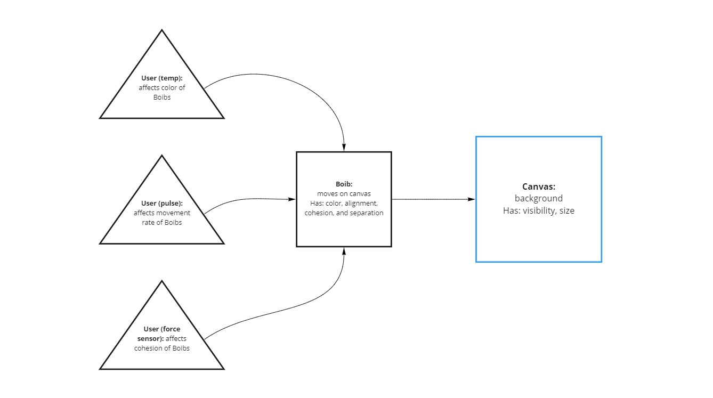

Project 4: Interconnected Systems
The final assignment encourages us to bring together all of our lessons into a single concept, whether that is expanding on a previous project or developing an entirely new one. I opted to for the latter and explored a new system using new inputs and a different types of visualization.
Context
My final project was unique from the earlier projects in the class. This falls into the category of mental focus, but also touches on the abstract data visualization, similar to my Published Sensor System.
Concept
The initial concept was to measure biometric data in the forms of heart rate (BPM) and body temperature (F) to measure the state of the user and provide a scale of mental states for them to select from (e.g. calm, happy, stressed, etc.) to see if there is a correlation between the individual perception and the actual physical state.
In looking deeper into this idea, I was given the suggestion to look into the Quantified Self, in which a wide array of metrics were measured of users and visualized in numerous ways. I began to think upon ways to further develop this connection between mental and physical state. My reiteration involved taking the same biometric data and implementing it against some physical input that would encourage the user to focus on a singular task with the goal of creating a calm, focused state.
Impetus
We live in a world of compounding stresses. As students, it’s part of our daily routines.
What if there was a simple way to get us to hone in on a singular task with the only goal being mental focus?
Tools & Methods
For gathering biometrics, I used a pulse sensor and a 1-wire temperature sensor. For user input I incorporated a force resistor. I programmed a Particle Argon board to send the data via serial to a Processing sketch. I soon discovered that the existing programs for the pulse sensor were geared for the Particle Proton and Core boards, so some work was required to get it working with the Particle Argon board. Some online referencing and stripping of the original code got it up an running.


System Diagram
The plan is simple: three inputs from the user affect points on the canvas that have color, movement, separation, and cohesion.

Visualization
My first inspiration came by way of Craig Reynold's Boids program, a simulation of flocking. Playing with the characteristics of cohesion and separation, I intended on challenging the user to create a balance of cohesion to the separation created by their biometrics, resulting in a more uniform flocking of the points on the interface.

Initial response revealed that this visualization does not provide a calming or focus effect for some users, and some are even further stressed by the movement of so many points. I was given several ideas, one of which was looking into metaballs. After a few A-B tests it proved that this would be a much more effective visualization if treated correctly.

The inherent nature of the design of the metaballs program is that the movement is completely random, with no direct relationship between the points and their behavior. My resolution was to hybridize the two programs I had been exploring. The result is what I like to refer to as "MetaBoids". They are essentially the flocking Boids with the pixel relationships of metaballs, giving me the visualization of the metalballs with the cohesion and separation variables of the Boids.
Once the Particle serial data was plugged into the sketch, I was able to manipulate the color values, rate of movement, and the cohesion of the points and dial them in to provide a visual representation for users to focus their attention on.

Form Factor
The existing form factor consists of a pulse sensor strapped to my left pointer finger, a temperature sensor tucked into my waistband against my skin, and a force sensor taped to a lacrosse ball. In a real world application, the pulse sensor would be built into a pad on which a user would rest their hand, a temperature gun situated somewhere atop a display monitor, and a joystick like fixture with the force sensor built into it.

Finishing Touches
This involved fine tuning details such as visual scale, input thresholds, and color application. This five minute time lapse shows the color change as the sensor comes to my body temperature before I engage with the force sensor. I found that going from a hotter purple to a softer blue-green provided a more calming overall visual. In a few tests I discovered focusing on the uniform object effectively lowered my heart rate.

Five minute time lapse.
Future Consideration
In a situation where in-person interaction is once again deemed safe, I would love to user test the system to gather more insight on the effects of certain color applications and visual treatments.
I was pleasantly surprised at the results I managed to gather from my own trials and would like to test hypotheses regarding this single task oriented interaction.
Future Iteration
Looking forward, I would first be interested in exploring other means of biometric data gathering. I would want the system to be as minimally invasive as possible.
Then I would consider the incorporation of sound, either by way of white noise or relaxing soundtrack, added control of mediating heart rate, as well as the possibility of adding metrics of brain activity into the concept.